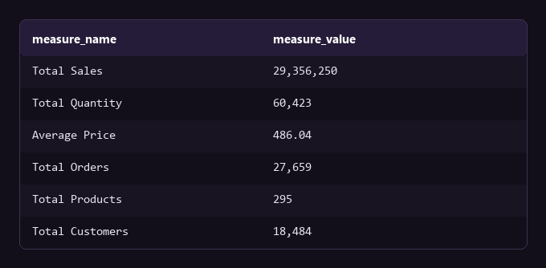
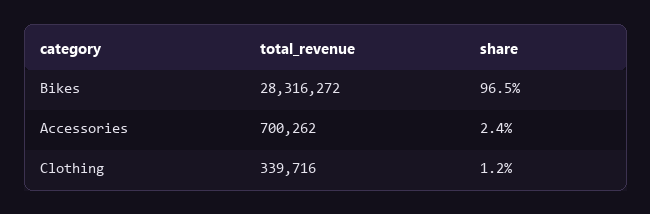
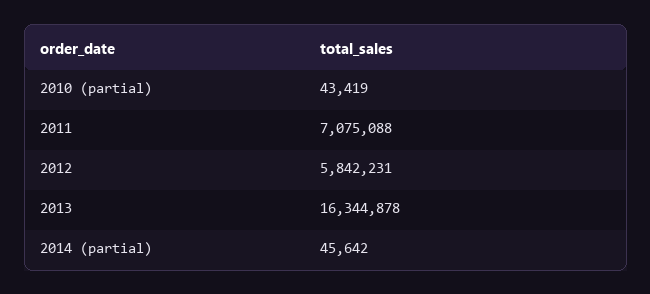
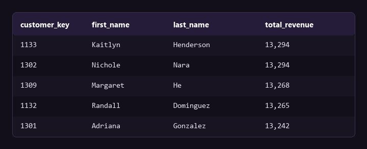
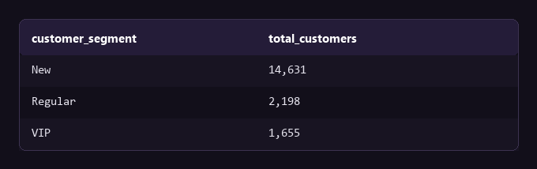

The data set and the approach
The gold schema holds 18,484 customers, 295 products, and 60,398 sales records in PostgreSQL 17. The repository runs 13 exploration scripts. This page selects 5 of those results and presents them as I would present them to a stakeholder: the question, the result, and what the result changes. Every number here has a decision attached to it.
What is the current baseline?
The first query gives the totals a stakeholder asks for first: sales, orders, products, and customers. These totals are the baseline for every later comparison.

Query
SELECT 'Total Sales', SUM(sales_amount) FROM gold.fact_sales
UNION ALL SELECT 'Total Orders', COUNT(DISTINCT order_number) FROM gold.fact_sales
UNION ALL SELECT 'Total Customers', COUNT(customer_key) FROM gold.dim_customers;The average order is near $1,061, from $29.36M across 27,659 orders. I use this figure to check every later result for consistency.
Which product category produces the revenue?
A split of revenue by category shows where the money comes from. It is normally the first business question after the totals.

Query
SELECT p.category, SUM(f.sales_amount) AS total_revenue
FROM gold.fact_sales f
LEFT JOIN gold.dim_products p ON p.product_key = f.product_key
GROUP BY p.category ORDER BY total_revenue DESC;Bikes produce 96.5% of revenue. This is concentration risk. If Bikes have a weak quarter, the whole business has a weak quarter. The next step is not to sell more bikes. It is to find out if Accessories and Clothing have low demand or low investment, and then to repeat the split by margin instead of revenue.
Is the business growing year over year?
One trend line can hide a single unusual period. A split by year shows if growth continues or if one year carries it.

Query
SELECT DATE_TRUNC('year', order_date) AS order_date, SUM(sales_amount) AS total_sales
FROM gold.fact_sales
WHERE order_date IS NOT NULL
GROUP BY DATE_TRUNC('year', order_date);Sales in 2012 fell 17% against 2011. Sales in 2013 were almost three times the 2012 figure. Before I record 2013 as growth, I must find the operational change between the two years, such as a new product line, a new region, or a price change. That change is the part the business can repeat.
Which customers carry the revenue?
A rank of customers by revenue shows if the business depends on a few large accounts or on a wide base. The answer changes the design of a retention program.

Query
SELECT c.customer_key, c.first_name, c.last_name, SUM(f.sales_amount) AS total_revenue
FROM gold.fact_sales f
LEFT JOIN gold.dim_customers c ON c.customer_key = f.customer_key
GROUP BY c.customer_key, c.first_name, c.last_name
ORDER BY total_revenue DESC LIMIT 10;The top 10 customers each spend near $13,000. No single account dominates. This lowers the risk from one lost customer. It also means a loyalty program must address a band of similar customers instead of a short VIP list.
What is the shape of the customer base?
Segmentation by lifespan and spend (VIP, Regular, New) turns a flat customer list into groups that a marketing or support team can address.

Query
-- VIP: 12+ months history, spend > 5,000
-- Regular: 12+ months history, spend <= 5,000
-- New: less than 12 months history
SELECT customer_segment, COUNT(customer_key) AS total_customers
FROM segmented_customers GROUP BY customer_segment;79% of customers are "New", with less than 12 months of history. This can show fast acquisition, or it can show that customers leave after the first year. The next query must be a cohort retention check, not another acquisition metric.
Bottom line
The business earns $29.36M from 27,659 orders, and 96.5% of that revenue comes from one category. The customer base gives no equal risk, because the top 10 customers each spend near $13,000 and no account dominates.
One action follows from this: reduce the dependence on Bikes. Before that, two questions need an answer. Do Accessories and Clothing have low demand, or low investment? And do the 79% of customers with less than 12 months of history stay after the first year? The next analysis is a margin split by category and a cohort retention check.